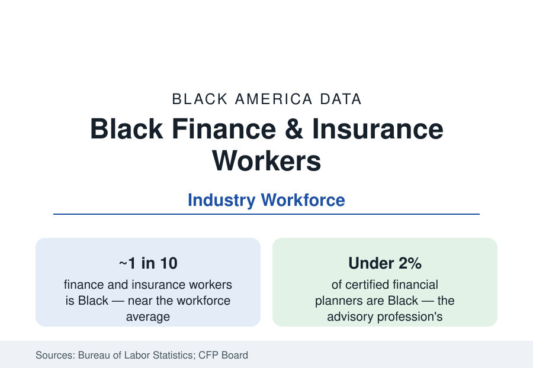

Black Employment
Black Workers in Finance and Insurance: The Industry's Thin Upper Floors
Black workers form about a tenth of the finance and insurance workforce — concentrated in its operations floors and thinnest in its revenue roles. The BLS and industry data.

Black workers form roughly a tenth of the finance and insurance industry's workforce — near their share of overall employment — in an industry whose internal geography is the employment section's most vertical map: representation is thickest in the operations, claims, and branch floors and thinnest in the revenue and investment roles where the industry's compensation concentrates. This article reports the finance workforce data, from the Bureau of Labor Statistics' industry tables to the credentialing bodies' counts.
The Industry's Layers
The CPS industry tables distribute Black finance employment unevenly by design of the business itself. Insurance carriers and agencies record the highest Black shares — the claims, underwriting-operations, and agency workforces of the big carriers, several of them headquartered in the city profiles' metros (Hartford, Columbus, Des Moines, San Antonio's USAA) — in the range of an eighth to a seventh of employment. Commercial banking's branch and operations layers run near the industry average; the credit union sector (the business section's community-finance profile) runs above it in its Black-led segment. Securities and investment — the trading, asset-management, and advisory businesses — record the lowest shares, in the mid-single digits for the industry's core occupations, falling further in the portfolio-management and analyst ranks the credential data count.
The Credential Counts
The licensed professions publish their own demographics, and they are the profile's hardest numbers. Certified Financial Planners are under 2 percent Black in the CFP Board's counts — in an advisory profession whose client base the wealth data describe — with Black CFP certificants numbering in the low thousands nationally and growing at rates the Board reports as a strategic priority. CFA charterholders in the United States record Black shares in the low single digits in the Institute's surveys. Actuaries — insurance's credentialed elite — record Black membership in the range of 1 to 2 percent in the casualty and life societies' data, against a pipeline (the math-degree data of the STEM profile) that explains the level without excusing it. Commercial lending officers and the SBA's lender ranks sit between the branch data and the credential data. The pattern is uniform: the more a finance role is gated by credential, sponsorship, and client inheritance, the thinner Black representation runs.
Compensation and the Revenue Line
Finance pays the economy's highest median wages, and its Black workers share the level partially: Black finance professionals' median earnings run above most industries' Black medians in the CPS data and below the industry's own median, the wedge being the occupational distribution — operations and support roles dominate the Black distribution while the industry's median is set by its revenue roles. The McKinsey and industry pipeline studies document the promotion gradient quantitatively: Black representation roughly halves at each successive level from entry to the C-suite in the financial-services pyramids they publish, with the vice-president-to-managing-director transition the steepest single drop — the sponsorship stage, in the studies' terminology, where client books and deal flow are allocated.
The Counterweights: Public Finance and Ownership
Two layers run against the gradient. The first is public and quasi-public finance: the Federal Reserve system, the Treasury and its bureaus, state treasurers' and comptrollers' offices, and municipal finance employ Black professionals at shares above the private industry's — the public-sector pattern applied to finance itself — and the recent era's appointments have placed Black executives at the head of major public financial institutions in numbers the private data do not match. The second is ownership: Black-owned asset-management firms (a small set of established firms managing institutional billions), Black-founded fintech companies, and the MDI banks of the business profile form an ownership layer whose assets under management remain a rounding error in the industry's trillions — and whose growth rate, from that base, the trade data track as the industry's diversity story with money attached.
Reading the Finance Data
Finance is the employment section's clearest demonstration that an industry-average share can describe two different industries: the one that processes America's money, where Black workers are a tenth of the hands, and the one that allocates it, where they are a fiftieth of the credentialed advisors and a sliver of the owners. The distance between those two industries, measured in the same CPS tables, is the profile.
More in Black Employment
The Black Unemployment Rate: The Two-to-One Pattern
Black unemployment runs at roughly twice the White rate — 5.5 percent against 3.3 percent in annual averages — a ratio stable across five decades of federal data. How it is measured and why it persists.
Black Median Weekly Earnings: The 80-Cent Ratio
Black full-time workers earn a median of about $900 a week — roughly 80 cents for every dollar White workers earn. The BLS earnings data by group, gender, and occupation.
Black Labor Force Participation: Working at National Rates
Black labor force participation runs at roughly the national rate — and Black women participate at higher rates than White women. The BLS participation data.
Source: U.S. Bureau of Labor Statistics, Current Population Survey; CFA Institute and Certified Financial Planner Board diversity data; McKinsey Women in the Workplace financial services analyses.